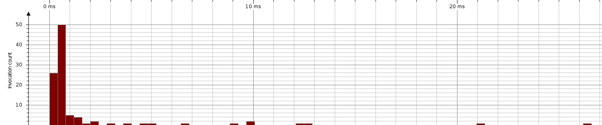

| Session: | Tarea2 |
| Time of export: | Monday, November 5, 2012 1:20:04 AM CLST |
| JVM time: | 00:50 |
| Method: | Prim. |
Total Time: | 193 ms | Invocations: | 100 | Average Time: | 1,934 µs | Median Time: | 700 µs | Minimum Time: | 290 µs | Maximum Time: | 26,257 µs | Standard Deviation: | 3,942 µs | Outlier Coefficient: | 36. |
|  |
| Call duration |